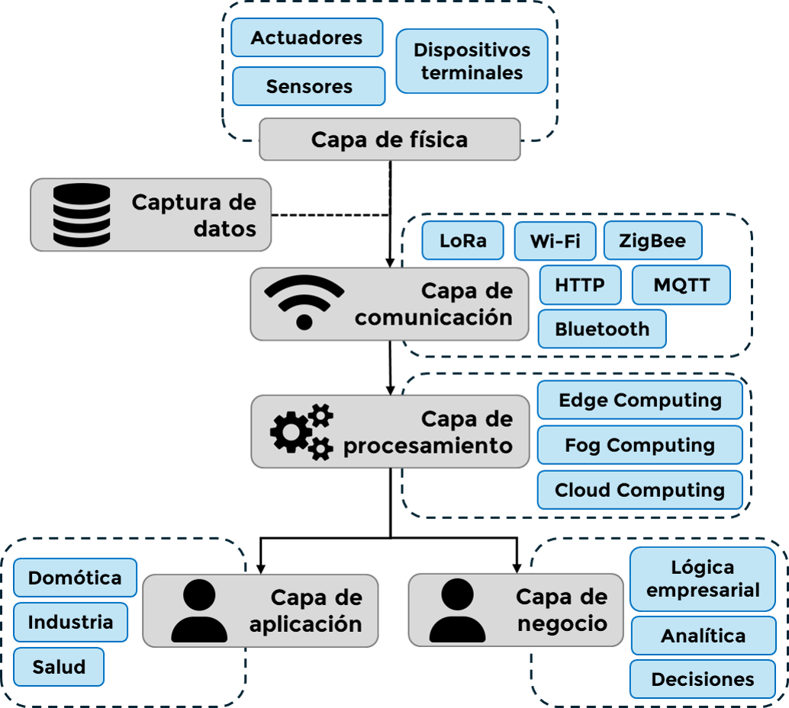
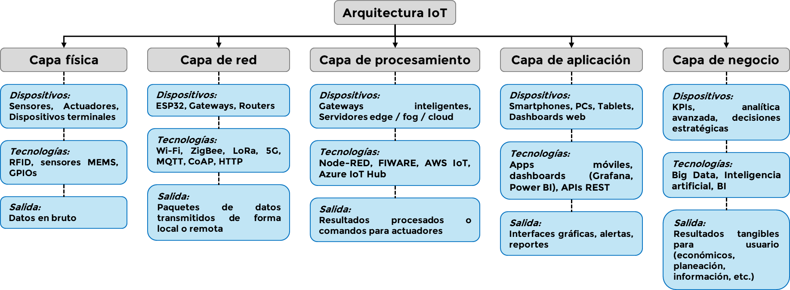

Módulo 2.3. Arquitectura general de un sistema IoT
La arquitectura de un sistema IoT define cómo se organizan y conectan los diferentes componentes que lo conforman, desde los sensores que capturan datos hasta las aplicaciones que brindan servicios inteligentes al usuario. Comprender esta estructura es clave para diseñar soluciones funcionales, escalables y seguras en diferentes sectores como la domótica, la industria o la salud.
Video 3:
Arquitectura de internet de las cosas (IoT)
Ver desde 10:23 hasta 12:05
Capas funcionales del IoT
Figura 9. Modelo de capas funcionales en un sistema IoT. Elaboración propia
Una forma común de representar la arquitectura de IoT es mediante un modelo de capas. Cada capa cumple funciones específicas que permiten la integración fluida de datos, dispositivos y servicios.
-
Capa de física: Es el nivel más cercano al mundo físico. Aquí se encuentran los sensores y actuadores encargados de captar
variables como temperatura, humedad, movimiento, entre otros. También puede estar complementado con dispositivos de identificación
como etiquetas RFID.
Ejemplo: Un sensor DHT11 mide temperatura y humedad en una granja inteligente.
-
Capa de red: Se encarga de transmitir los datos capturados hacia sistemas de procesamiento. Usa tecnologías como Wi-Fi,
Bluetooth, ZigBee, LoRa, 4G/5G o Ethernet y/o protocolos MQTT, CoAP y HTTP. Esta capa esencialmente tiene la función de
asegurar que la información llegue de forma segura y eficiente entre la capa física y demás.
Ejemplo: Un módulo Wi-Fi envía los datos del sensor a una base de datos remota.
Tecnología Rango Consumo Ancho de banda Aplicaciones Wi-Fi 50-100 m Alto Hasta 600 Mbps Domótica, cámaras IP, transmisión multimedia LoRa 2-15 km Muy bajo 0.3-50 kbps Monitoreo agrícola, ciudades inteligentes, sensores rurales ZigBee 10-10 m Bajo 250 kbps Automatización del hogar, control industrial, iluminación 5G 100 - varios km Moderado - Alto Hasta 10 Gbps Vehículos conectados, streaming AR/VR, IoT masivo urbano -
Capa de procesamiento o middleware: Aquí se filtran, almacenan y procesan los datos. También se aplican reglas de decisión
y se gestionan los dispositivos conectados. Puede utilizar:
- Edge Computing: procesamiento cercano al origen.
- Fog Computing: procesamiento intermedio.
- Cloud Computing: almacenamiento y análisis en la nube.
Ejemplo: Una plataforma como Node-RED toma decisiones basadas en umbrales definidos por el usuario.
Tecnología Ubicación Ventajas Limitaciones Cloud Computing Centro de datos Alta capacidad de almacenamiento y cómputo Latencia elevada, dependencia de conexión Edge Computing Cerca del dispositivo Baja latencia, procesamiento local rápido Capacidad limitada, mayor costo por nodo Fog Computing Intermedio (gateway) Balance entre cloud y edge Mayor complejidad de configuración Middleware IoT (e.g. Kaa, FIWARE) Nube o gateway Facilita integración y gestión de dispositivos Requiere configuración inicial compleja -
Capa de aplicación: Es la interfaz final con el usuario. Presenta la información de forma visual, permite controlar
dispositivos y personalizar comportamientos. Esta capa puede variar según la aplicación y las necesidades del usuario como:
- Domótica: control de luces, persianas, cámaras.
- Salud: monitoreo de signos vitales.
- Industria: alertas y mantenimientos predictivos.
Ejemplo: Una app móvil muestra el estado del sistema de riego y permite activarlo manualmente.
-
Capa de negocio (en arquitecturas extendidas): Incluye la lógica empresarial, analítica avanzada y toma de decisiones
estratégicas.
Ejemplo: Análisis de consumo energético mensual y predicción de costos futuros.
Modelo de negocio Descripción Ejemplo de aplicación Valor generado Pago por uso Facturación según consumo o uso real de un recurso Riego inteligente por volumen aplicado Eficiencia operativa, reducción de costos Mantenimiento predictivo Uso de datos para anticipar fallos y reducir paradas Monitoreo de motores en fábricas Reducción de fallos, optimización de recursos Optimización de procesos Análisis de datos en tiempo real para ajustar operaciones Gestión energética en edificios inteligentes Ahorro energético, sostenibilidad Nuevos servicios digitales Creación de servicios basados en datos generados por IoT Aplicaciones móviles de salud conectada Diferenciación, fidelización del cliente Plataformas y ecosistemas Monetización a través de la integración de múltiples actores Plataformas abiertas de ciudades inteligentes Escalabilidad, colaboración intersectorial
Elementos clave en una arquitectura IoT
Además de las capas, un sistema IoT cuenta con diversos componentes que interactúan entre sí:
- Dispositivos físicos: sensores, actuadores, microcontroladores (como ESP32, Arduino, etc.).
- Gateways: dispositivos intermedios que recolectan, transforman y enrutan los datos hacia la nube o servidores.
- Servidores y plataformas de datos: almacenan, procesan y analizan la información recibida.
- Aplicaciones de usuario: permiten visualizar, configurar y controlar el sistema.
Ejemplos de arquitecturas en aplicaciones reales
-
Domótica:
Sensores de luz → Gateway → Plataforma de control → App en celular
Ejemplo: Encendido automático de luces cuando oscurece.
-
Industrial:
Sensores de vibración → Gateway industrial (PLC) → Plataforma Edge/Cloud → Sistema SCADA
Ejemplo: Monitoreo preventivo de motores.
-
Salud:
Sensor de pulso → Dispositivo wearable → Servidor de salud → Dashboard médico
Ejemplo: Alerta en tiempo real por anomalía en ritmo cardíaco.
| Sector | Objetivo principal | Dispositivos comunes | Tipo de datos |
|---|---|---|---|
| Domótica | Comodidad y automatización del hogar | Sensores de presencia, temperatura, cerraduras | Estado de dispositivos, ambiente |
| Salud | Monitoreo remoto y prevención | Pulseras de ritmo cardíaco, sensores de oxígeno | Signos vitales, actividad física |
| Industria | Mantenimiento y eficiencia operativa | Sensores de vibración, presión, cámaras térmicas | Parámetros técnicos, alertas |
| Agroindustria | Optimizar riego y cultivos | Humedad de suelo, clima, cámaras | Datos ambientales, predicción |
| Ciudades Inteligentes | Mejorar servicios urbanos | Sensores de tráfico, calidad del aire, iluminación | Flujo vehicular, contaminación |
Conclusiones
Comprender la arquitectura de un sistema IoT es esencial para diseñar, analizar o implementar soluciones reales. Cada capa tiene una función crítica: desde capturar los datos, comunicarlos, procesarlos hasta presentarlos de forma útil. La correcta interacción entre sensores, gateways, plataformas y aplicaciones garantiza un sistema eficiente, escalable y útil en distintos contextos, como la domótica, la industria o la salud. Este conocimiento sienta las bases para profundizar en diseños más complejos y personalizados en los siguientes módulos del curso.
Figura 10: Mapa conceptual sobre interacción entre capas y componentes en IoT. Elaboración propia
Referencias
- A. Al-Fuqaha, M. Guizani, M. Mohammadi, M. Aledhari y M. Ayyash, "Internet of Things: A Survey on Enabling Technologies, Protocols, and Applications," IEEE Communications Surveys & Tutorials, vol. 17, no. 4, pp. 2347-2376, 2015.
- D. Borgia, "The Internet of Things vision: Key features, applications and open issues," Computer Communications, vol. 54, pp. 1-31, Dec. 2014.
- D. Borgia, "Special Issue on Internet of Things: Research Challenges and Solutions," Computer Communications, vol. 89-90, pp. 1-4, Sep. 2016.
- Y. Xia, "IOT Research and Application of IT," IOP Conf. Ser.: Mater. Sci. Eng., vol. 768, 2020.
- M. Colakovic y M. Hadzialic, "Internet of Things (IoT): A review of enabling technologies, challenges, and open research issues," Computer Networks, vol. 144, pp. 17-39, Oct. 2018.
- J. Lin, W. Yu, N. Zhang, X. Yang, H. Zhang y W. Zhao, "A Survey on Internet of Things: Architecture, Enabling Technologies, Security and Privacy, and Applications," IEEE Internet of Things Journal, vol. 4, no. 5, pp. 1125-1142, Oct. 2017.